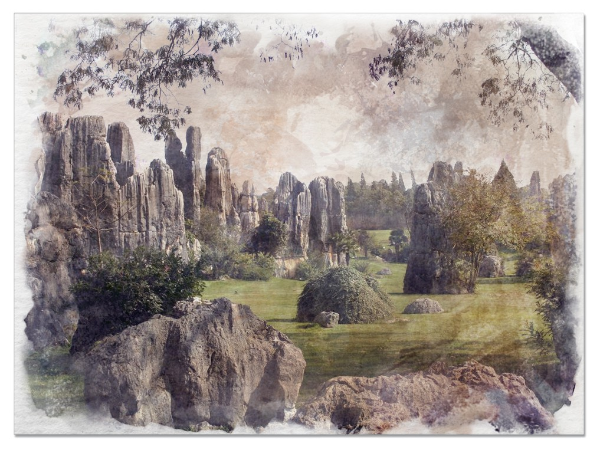

Limestone
Formed by compressed sediment, it is a very heavy and fairly rare bedrock. Limestone has little resistance to acidic solutions and a millennia of rain will wear it down considerably. Most cave systems begin with passages through limestone bedrock. This light grey rock is a popular building material.